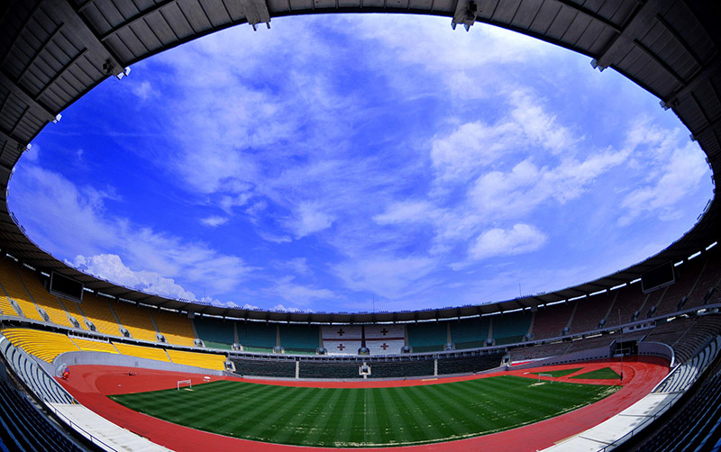

Dinamo bought cristioano
go to categoriesGo to articles

The history of FC Dinamo Tbilisi began in autumn 1925 when the Dinamo sports society set out to form a football club, at a time when football was gradually becoming one of the most greatest and popular sports in the world. In 1927, FC Dinamo Tbilisi established a Junior club, "Norchi Dinamoeli" (young Dinamo). The Juniors club provided the senior with many young skillful players, including the first goalkeeper who played for Dinamo in the USSR championship, the first captain Shota Savgulidze, defender Mikhail Minaev, forward Vladimer Berdzenishvili and other famous players.